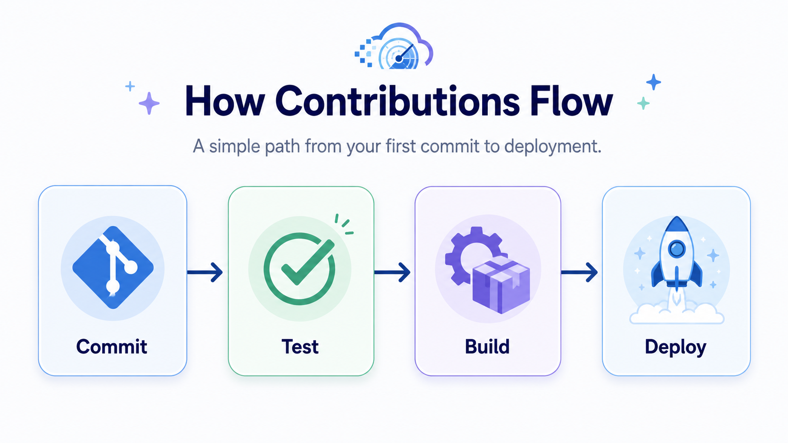

Build Software
Turn ideas and models into real tools, features, APIs, and integrations.
You help make mlcast more usable, stable, and ready for real-world workflows.
Even a small improvement can make the whole project easier to adopt.

MLCast is a collaborative community advancing weather nowcasting through machine learning by openly sharing datasets, software, experiments, and expertise.
Find your pathTurn ideas and models into real tools, features, APIs, and integrations.
You help make mlcast more usable, stable, and ready for real-world workflows.
Even a small improvement can make the whole project easier to adopt.

Try new architectures, tune parameters, and explore different nowcasting approaches.
You help improve accuracy, stability, and the overall performance of the models.
Even a simple idea can lead to stronger and more interesting results.
Check performance, compare experiments, and make sure results are reliable.
Your critical eye helps the community understand what truly works and what needs improvement.
You help the project grow on a stronger and more trustworthy foundation.
Welcome new contributors, answer questions, and help people get started.
Your support makes the community more open, clearer, and easier to join.
Often, a simple guide is enough to help someone feel part of the project right away.
Contribute datasets, ingestion pipelines, or data schemas that help the project grow.
Your work makes testing more realistic and results more useful for everyone.
A well-prepared dataset can become the foundation for many new experiments.
Make the project easier to understand with guides, examples, tutorials, and clear explanations.
Good documentation saves time and helps more people start contributing without friction.
You can turn complex ideas into simple steps anyone can follow.
Pick the kind of contribution that fits your interests and experience.
Use a small, documented task to learn the workflow without a large commitment.
Open a pull request, contribute a dataset, or bring your findings to the community.
Small, clearly scoped tasks from MLCast repositories. Pick one and ask for context before you begin.
Loading current issues…
You do not need a finished idea. Tell us what you are interested in and we’ll help you find a useful first step.